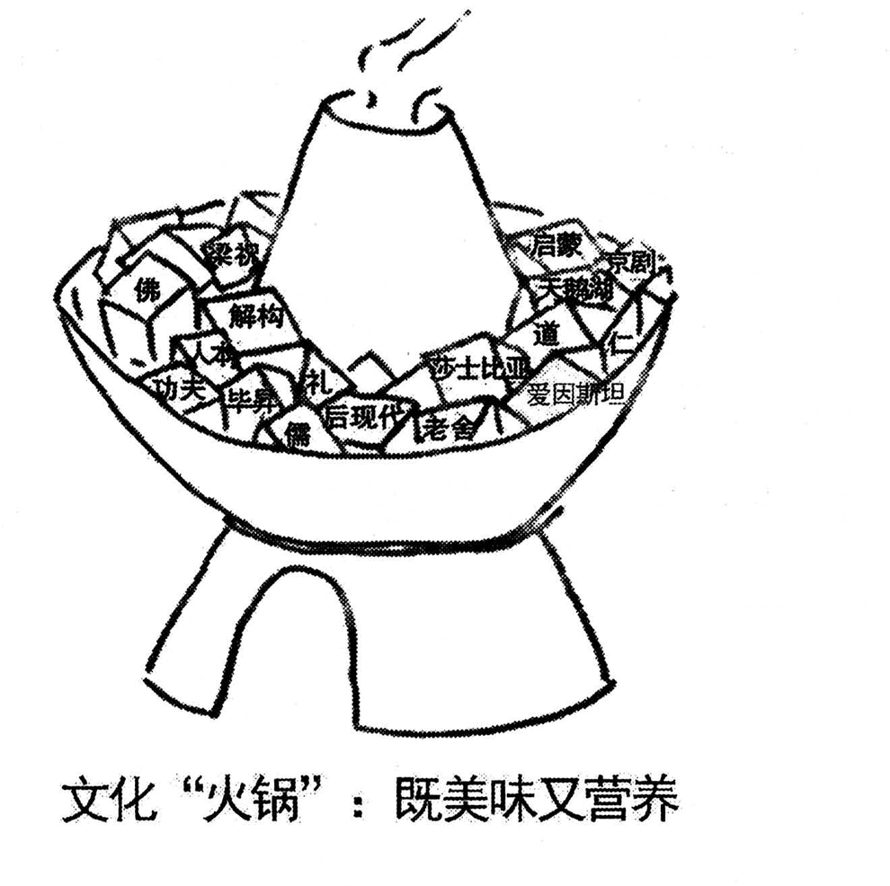

A小作文 · 通知：招募国际会议志愿者（10 分）
You are supposed to write for the Postgraduates’ Association a notice to recruit volunteers for an international conference on globalization. The notice should include the basic qualifications for applicants and other information which you think is relevant.
You should write about 100 words on ANSWER SHEET 2.
Do not sign your own name at the end of the notice. Use “Postgraduates’ Association” instead. (10 points)
💭 审题三件事
- 先把体裁认死，格式分才拿得稳。通知的读者是一群陌生人（全校研究生），不是某一个人——所以不写称呼、不写客套、多用被动与第三人称（are needed / are expected / will be given）。这不是文风问题：写成「Dear friends, I am writing to tell you…」，阅卷人第一眼就判你体裁没认对，后面写得再好也补不回来。
- qualifications 要写成「条件」，不是「愿望」。「热爱志愿服务、有责任心、乐于奉献」这类词无法核验，写三条等于零条。可核验的条件长这样：会说什么语言 / 懂不懂这个主题 / 会期那几天有没有空 / 以前做过没有。⭐ 更进一步：每个条件后面挂半句理由（英语要好，因为客人来自二十多个国家），条件立刻从口号变成要求，也顺手把「会议是国际会议」这个背景交代了。
- 开放式要点＝站到读者位置上列清单。“other information which you think is relevant” 不是让你自由发挥，是让你自己想清楚读者不知道什么就没法行动。招募通知的读者只关心四件事：做什么（会议何时何地）／谁能报（qualifications）／怎么报（渠道 + 截止）／报了有什么好处（培训、证书、与学者接触）。四问逐项打勾，100 词刚好装满，且一条不漏。
⭐⭐ 书信 vs 通知：整套格式的七处不同（本页新增 · 本年最硬的分界线）
| 书信（2007 建议信 / 2008 道歉信 / 2009 致编辑信） | 通知 NOTICE（2010 本题） | |
|---|---|---|
| 标题 | 无标题，直接写称呼 | NOTICE 居中、单独一行（写 Notice 也可，全大写更醒目） |
| 称呼 | Dear Editor, / Dear Sir or Madam, | 没有称呼。写 Dear … ＝ 体裁错，直接掉档 |
| 第一句 | I am writing to …（第一人称目的句） | 直入事由：Volunteers are needed for …（读者要的是事，不是你的动机） |
| 人称 | 通篇第一人称 I | 多用被动与第三人称：are expected to / will be arranged / Those interested should … |
| 收尾 | I do hope … / Thank you for your consideration. | 不要客套句，最后一句给行动指令（怎么报名、截止到哪天） |
| 落款 | Yours sincerely, Li Ming | 只写机构名：Postgraduates’ Association。没有 Yours sincerely，也不签人名 |
| 日期 | 2009 题干明令不写 | 本年没禁止：写在落款下方或右上角都行，不写也不扣（字数紧就省掉） |
⚠️ Directions 限定词清算表（开考先圈出来）
小作文 10 分，丢分很少丢在语言上，多半丢在没看见 Directions 里的限定词。本题的限定词密度不如 2009 高，但每一个都直指格式。
| 限定词 | 它约束什么 | 违反的后果 |
|---|---|---|
| a notice | 体裁＝通知，不是信 | 按书信写（Dear… / Yours sincerely / 签人名）＝体裁错，语言再好也上不了一档 |
| write for the Postgraduates’ Association | 你是代研究生会发布，不是以个人身份招人 | 通篇 I want to invite you…＝身份错位，也导致落款写不对 |
| the basic qualifications for applicants | 硬要点：必须有一段专写「谁能报」 | 通篇只讲会议多重要、多欢迎大家报名＝缺一个要点，直接掉档 |
| other information which you think is relevant | 开放式要点：由你补齐读者行动所需的信息 | 要么漏写（只有条件、没有报名方式），要么写成与招募无关的会议介绍长篇 |
| an international conference on globalization | 会议性质：国际 + 主题明确 | 条件里不提外语、不提对主题的了解＝条件与会议脱钩，「基本条件」写空了 |
| about 100 words | 95–115 最稳 | 低于 80 按档扣；超过 130 挤占大作文时间（20 分才是大头） |
| Do not sign your own name … Use “Postgraduates’ Association” instead | 落款＝机构名 | 签 Li Ming（沿用去年手感）或签真名——后者有判零风险 |
🧩 开放式要点怎么补全：招募通知的「四问清单」（本页新增）
“other information which you think is relevant” 是把选题权交给你。选题权不等于自由发挥——判据只有一条：读者不知道这件事，就没法行动。照下面四问逐项打勾，100 词刚好装满。
| 读者的问题 | 你要给的信息 | 本文写成了哪一句 |
|---|---|---|
| 做什么？ | 会议名称、时间、地点（一句话交代完） | the International Conference on Globalization, which will be held on our campus from May 8 to 10 |
| 谁能报？ 题干点名 | 三条可核验的条件：语言 / 知识 / 时间；再加一条「优先但非必需」 | a good command of spoken English … some knowledge of globalization … enough free time during the three days |
| 怎么报？ | 渠道 + 截止日期（最容易漏的一项） | send a short application to the office of the Association before April 20 |
| 有什么好处？ | 培训 / 证书 / 与学者接触——招募通知没有这一句就只是在派活 | Training will be arranged beforehand, and a certificate will be given to everyone who completes the work. |
✍️ 范文（ 词 · 🟡 亮点点击看讲解）
NOTICE
事由Volunteers are needed for the International Conference on Globalization, which will be held on our campus from May 8 to 10.
基本条件Applicants are expected to meet three requirements: a good command of spoken English, since guests will come from over twenty countries; some knowledge of globalization, so that they can answer questions about the sessions; and enough free time during the three days of the conference.
加分项Previous experience of voluntary work is preferred but not essential.
怎么报Those interested should send a short application to the office of the Association before April 20.
回报Training will be arranged beforehand, and a certificate will be given to everyone who completes the work.
Postgraduates’ Association
现招募国际全球化会议志愿者，会议将于 5 月 8 日至 10 日在本校举行。
报名者须满足三项条件：口语流利，因为与会嘉宾来自二十多个国家；对全球化议题有一定了解，以便解答有关各场次的问询；会议三天期间有充足的空闲时间。
有志愿服务经验者优先，但并非必需。
有意者请于 4 月 20 日前将简短的申请材料送至研究生会办公室。
我们将提前安排培训，并向完成工作的每位志愿者颁发证书。
研究生会
- ⭐ 体裁按书信写：加了 Dear friends / Dear students，或结尾写 Yours sincerely，或末尾签 Li Ming。这是本题最高频的失分——前三年都是信，手感会自动往那边滑。题干连着两次点名 the notice，就是在提醒你。
- ⭐ 落款落款写人名而不是 Postgraduates’ Association。题干把机构名加了引号原样给你，抄上去即可；签自己的真名有判零风险。
- 要点缺 qualifications：通篇在讲会议多重要、诚邀大家参与，就是不说「谁能报」。题干把它写在第一位，缺了直接掉档。
- 要点条件不可核验：「有责任心、有爱心、热爱志愿服务、能吃苦」——四条等于零条。可核验的是语言、知识、时间、经历四类。
- 要点漏掉截止日期或报名渠道。这是 “other information” 里最该有的一项：一则不告诉读者怎么报名的招募通知，等于没发。
- 语言搭配三处易错：a good command of English（不是 a good grasp on）；be familiar with / have some knowledge of（不是 know well about）；apply for a position 但 send an application to sb。
- 语言applicant / volunteer 的单复数与冠词：Applicants are expected…（复数泛指不加冠词）；a certificate will be given to everyone（everyone 接单数动词）。
- 格式标题 NOTICE 忘了写，或写成 “A Notice to Recruit Volunteers” 这种长标题。通知的标题就一个词。
- 字数about 100 词：95–115 最稳。本文 词（不含标题与落款）。
- 第一句用被动式直入事由：Volunteers are needed for … —— 通知的读者是一群人，他们要的是「有什么事、跟我有没有关系」，不是「我为什么写」。被动语态在这里不是弱化，是把「事」推到句首。
- 会议信息压成一个非限制性定语从句：…, which will be held on our campus from May 8 to 10. 时间地点不值得单起一句，挂在从句里只花 11 个词，省下的额度全给条件段。
- 先报数再分条：meet three requirements —— 与 2009 那句 May I make three suggestions 是同一招：替阅卷人把条数数好。本题题干没规定数量，自己定三条最稳（两条显薄，四条挤）。
- 三条写成三个并列名词短语，而不是三个 they should 从句：a good command of… / some knowledge of… / enough free time… —— 并列结构一眼可数，还省下十来个词；三条之间用分号隔开，因为条内已经有逗号了。
- ⭐ 每条后面挂半句理由：spoken English, since guests will come from over twenty countries；knowledge of globalization, so that they can answer questions。理由一挂，条件就从「我们想要什么样的人」变成「这活儿需要什么样的人」，同时把会议的国际性与主题都交代了——一石三鸟。
- 「会期有空」是最容易漏的一条硬条件：志愿者不是听众，得全程在。写上它，说明你真的想过这件事怎么运转。
- “preferred but not essential” 是一句分寸话：既表明有经验的优先，又不把没经验的人吓走。招募类文书写「优先条件」时都可以套这个结构。
- 末句给回报，不是给感谢：training + certificate。通知不写 Thank you for your attention——那是信的收尾；通知的最后一句要么是行动指令，要么是给读者的好处。
B大作文 · 图画作文（20 分）
Write an essay of 160–200 words based on the following drawing. In your essay, you should
1) describe the drawing briefly,
2) explain its intended meaning, and
3) give your comments.
You should write neatly on ANSWER SHEET 2. (20 points)

- 一口中式火锅坐在三足炉座上，锅心的烟囱正冒着两缕热气——锅是热的、正在煮。这个细节后面有大用（见「火锅不是熔炉」）。
- 锅里堆满方块状的食材，每一块都画着清晰的立方体棱线：块与块紧挨着，界线一条也没糊掉。
- 其中 17 块写了字，另有若干块是空白的（留给你没想到的那些）。
- ⚠️⚠️ 写了字的 17 块里，外来的占 7 块——将近一半。这一条直接否掉「中国文化博大精深」的单向立意：这不是一锅中国菜，是一锅合煮。
- 图注（画下方一行汉字）：文化“火锅”：既美味又营养。「火锅」两字带引号 ＝ 命题人自己标出了「这是比喻」；后半句是一个带两个并列谓语的判断句。
🔍 17 块料逐块认（本页新增 · 别人写不出来的细节全在这里）
原页嵌入图 dpi 130 整页渲染时锅里的字全糊成墨点，必须取 PDF 原生位图（4264×6131）分左右两半 3× 放大才认得出。逐块复核结果如下——考场上不必把 17 个都写进文章，各挑三四个成对并置即可（写全＝白扔 40 词）。
🔴 中国侧 10 块 🔵 外来侧 7 块。并置着写最省字：rites, kung fu and Peking opera lie beside Shakespeare, Einstein and Swan Lake。
💭 审题：题眼是图注——一个比喻 ＋ 两个并列谓语
- 先把比喻拆开，第二段才有东西写。图注给的是喻体（火锅），你得当场兑换成本体：锅＝我们今天的文化（或这个时代）／每一块料＝一种传统、一个人物、一套思想／一锅汤＝共同的生活与语境／火＝交流本身。兑换只花一句话（The pot, of course, is our culture today.），但没有它，后面所有话都悬空。凡图注带引号的比喻，第二段第一句就是兑换句。
- ⭐⭐ 别把火锅读成大熔炉。这是本图最隐蔽的跑题（详见下方专栏）：熔炉是把所有金属熔成一块，火锅是每块料还是自己那块料，只是共享一锅汤。画面证据就在纸面上——每一块都还画着清晰的棱线，每一块还写着自己的名字。写成「各种文化融为一体、界限消失」，等于把画上明明白白的线当没看见。这是本年的「没有蜘蛛」时刻（2009 那幅图里没有蜘蛛，所以不能读成陷阱）。
- 两个谓语要各给一个理由，不能只当形容词用。「既美味又营养」不是修辞叠加，是两条不同的好处：美味＝差异带来的丰富（好吃在于它们不一样），营养＝交融带来的滋养（有益在于它们在一起）。一句话就能同时结清：delicious because the flavours differ, nourishing because they meet. 有了这一句，第二段才叫「论述充分」；否则通篇是「文化交流很好、很重要」的同义反复。
| 意象 | 结果 | 对得上这幅图吗 |
|---|---|---|
| melting pot 熔炉 | 全熔成同一种东西，原来的形状没了 | ❌ 与画面矛盾：棱线清晰、名字都在 |
| salad bowl 沙拉碗 | 各自保留，但是凉的、互不影响 | △ 不够：图里的锅是热的，正在煮 |
| ⭐ hot pot 火锅 | 形状各自保留，味道互相渗透 | ✅ 正是本图：keeps its own shape, and yet shares one soup |
⟹ 元规矩：凡是符号有「大家都知道的现成联想」，先回画面查一遍这联想成不成立。2009 是「蛛网＝陷阱」（图里没蜘蛛），2010 是「火锅＝熔炉」（图里没煮化）——连续两年，命题人都在同一个位置设坑。
| 那块料 | 它的来路 | 它替你回答什么 |
|---|---|---|
| 佛 Buddhism | 两千年前从印度进来的外来户；今天没有人还觉得它是外国的 | 历史上最成功的一次外来输入，如今已是最中国的东西之一 ⟹ 开放不会让我们失去自己，反而扩容。可写：is now as Chinese as the pot itself |
| 毕昇 Bi Sheng | 活字印刷的发明者——反方向出去的那一块；而锅里恰好还有一块写着「启蒙」 | 这锅是双向的：我们也给过别人料。可写：whose movable type travelled the other way |
📐 描图段三看（换任何一年的图都能用 · 本图版）
| 看什么 | 在本图里 | 为什么它是采分点 |
|---|---|---|
| ① 看图上的字 | 图注必须译出，而且两个谓语都要在：a cultural “hot pot” — delicious and nourishing。锅里的名字挑三四个成对写。 | 命题人写上去的字＝主旨直译。「既…又…」是两条并列的好处，译文丢一个，第二段就少一条论证线。 |
| ② 看最反常的地方 | 锅里的料互不相干却煮在一起（京剧挨着天鹅湖、儒挨着解构），而且每块都还是方的、都还写着自己的名字。 | 反常处就是寓意的入口：共处而不同化。「都还是方的」这一条，直接给出「不是熔炉」的证据。 |
| ③ 看动作方向 | 锅在冒热气——正在煮，不是摆盘；图注是正面判断（既美味又营养）。 | 方向决定基调：本图是褒扬不是反讽（与 2009 恰好相反）。基调判反了，全文与命题人对着干。 |
🧩 图注的语法结构，决定文章的论证结构（四年扩到五年）
| 年份 | 图上的字是什么结构 | 文章就得怎么搭 |
|---|---|---|
| 2007 | 无字，只有两个想象气泡 | 靠对比两个气泡立意；描图段要把两人各自「想什么」都说出来 |
| 2008 | 因果句：你一条腿，我一条腿；你我一起，走南闯北 | 顺着因果推：分开 ⟹ 寸步难行；合起来 ⟹ 无远弗届。单线论证 |
| 2009 | 对举短语：网络的“近”与“远” | 两边都写，还要回答「为什么同一个东西既近又远」。双线并成一股 |
| 2010 本题 | ⭐ 比喻式判断句：文化“火锅”：既美味又营养 | 两步走：① 先解喻（喻体兑换成本体，一句话）；② 再分别落实两个并列谓语，每个给一条理由。比 2009 又多一层——2009 只要解释「统一性」，本年还得先把比喻拆开 |
| 2022 | 对话：两名学生就要不要听讲座的两句话 | 必须转述两句对话并选边站；不站队＝和稀泥，掉档 |
- 看见图上的字，先判它的语法结构，再决定段落怎么搭。无字 ⟹ 对比画面；因果句 ⟹ 顺推；对举短语 ⟹ 双写 + 解释统一性；比喻式判断句 ⟹ 先解喻、再逐个落实谓语；对话 ⟹ 转述 + 站队。这一步只花 20 秒，却决定第二段是不是踩在点上。
- 判断句里的并列连词就是段落的分格线：「既 A 又 B」＝两条论证线，「不是 A 而是 B」＝一破一立，「A 与 B」＝两边都写。连词数一数，就知道第二段要分几层。
✍️ 范文（ 词 · 🟡 亮点点击看讲解）
①描图As is symbolically shown in the drawing, a Chinese hot pot is steaming on its stand, and its bowl is piled with cubes of food. On each cube a name is written: rites, kung fu, Peking opera and the Butterfly Lovers lie beside Shakespeare, Einstein, Swan Lake and deconstruction. The caption reads: a cultural “hot pot” — delicious and nourishing.
②寓意The pot, of course, is our culture today. It is not a melting pot but a hot pot: every cube keeps its own shape and its own name, and yet all of them share one soup and season one another. Nothing is boiled away into a paste. Hence the dish is at once delicious and nourishing — delicious because the flavours differ, nourishing because they meet.
③评论To my mind the drawing answers the fear that openness will cost us ourselves. One cube in the bowl is Buddhism, which came from India two thousand years ago and is now as Chinese as the pot itself; another is Bi Sheng, whose movable type travelled the other way. A culture that dares to taste is not weakened but fed. For my part, I would rather add a cube than close the lid.
这口锅，当然就是我们今天的文化。它不是一座熔炉，而是一口火锅：每一块料都保留着自己的形状和自己的名字，然而它们共享同一锅汤，彼此入味。没有一块被煮成了糊。正因如此，这道菜才既美味又营养——美味，是因为味道各不相同；营养，是因为它们相遇。
在我看来，这幅画回答了一种担忧：开放会不会让我们失去自己。锅里有一块是佛，它两千年前从印度来，如今已和这口锅本身一样中国；另一块是毕昇，他的活字则是朝相反的方向走出去的。一种敢于品尝的文化不会被削弱，只会被喂养。就我而言，我宁愿再添一块料，也不愿把锅盖盖上。
🔁 一图三写：同一幅图，第三段的三个版本
Directions 第 3 条的动词决定第三段的形态。本年是 comments，但同一幅图换个问法照样考——三个版本各写一遍，考场上任你抽。点击卡片可高亮。
- ⭐⭐ 立意写成「中国文化博大精深、要走向世界」的单向输出。锅里 17 块有 7 块是外来的（莎士比亚、爱因斯坦、天鹅湖、启蒙、人本、解构、后现代），只写中国＝只读了一半图。
- ⭐⭐ 立意写成「全球化＝文化入侵／文化趋同」的负面立意。图注 既美味又营养 是明写的正面判断，唱反调等于跟命题人对着干。顾虑可以留一句在第三段，但基调不能翻。
- ⭐⭐ 读图melting pot 读法：写成「各种文化融为一体、界限消失」。与画面矛盾——每块都还是方的、名字都还在。本年最隐蔽的坑。
- 结构只描图不解喻：把 17 个名字挨个抄一遍，60 词全花在清单上，第二段无话可说。各挑三四个成对并置就够了。
- 结构两个谓语只写一个：通篇讲「多元很丰富」（美味），不讲「为什么有益」（营养）。「既…又…」是两条论证线，缺一条就是论述不全。
- 内容停在口号：「文化要交流互鉴、要包容开放」。方向对，但不解喻、不给理由，通篇是同义反复，最多二档。
- ⚠️ 史实把毕昇写成「导致了欧洲启蒙运动」。学界有争议，卷面只写「travelled the other way」——议论文涉史实，宁可写「流动」不写「导致」。
- 语言文化专名的处理（详见下方 04 节）：Peking opera（不是 Beijing opera）、kung fu（已入英语词典，不加引号）、the Butterfly Lovers（不音译成 Liang Zhu）、人名后必须加同位语（Bi Sheng, the inventor of movable type）。
- 字数160–200：190–198 最稳。本文 词。
- 开篇用 symbolically 而不是 vividly：本图是象征型（火锅喻文化），一个副词就告诉阅卷人「我知道这是比喻」。写实的画才用 vividly depicted。
- 描图段把 17 个名字压成一句并置：rites, kung fu, Peking opera and the Butterfly Lovers lie beside Shakespeare, Einstein, Swan Lake and deconstruction。一个动词 lie beside 就把「中西共处」这个事实写完了，比写「there are many cubes, some are Chinese and some are foreign」省字又高级。
- 兑换句只用一句：The pot, of course, is our culture today. of course 是图画作文的润滑剂——它表示「这个对应关系不言而喻」，省掉了一整句解释。
- ⭐⭐ 全文的心脏是 not a melting pot but a hot pot。它同时干三件事：① 证明你真的读了图（细到「有没有煮化」）；② 当场否掉最常见的那个跑题；③ 用一个现成的英文文化概念（melting pot）作反衬，语言分和内容分一起拿。凡是自己容易跑题的地方，就在卷面上明写出来——与 2009 那句 There is no spider in the picture 是同一招。
- and yet 是这段的转轴：keeps its own shape … and yet … share one soup。「各自保留」与「彼此渗透」看似矛盾，and yet 一挂就成了一体两面，正是火锅区别于熔炉与沙拉碗的地方。
- Nothing is boiled away into a paste 是一句反面强化：正面说完再从反面钉一句，比连写两句正面话有力。boiled away（煮没了）／into a paste（成了糊）都是小词，不用生词也能写出画面感。
- 一句话结清两个谓语：delicious because the flavours differ, nourishing because they meet。两个 because 并列，对仗且各给一条理由——图注的「既…又…」到这里才算真正落地。
- 第三段先立靶子再打：the fear that openness will cost us ourselves。comments 段的高分写法不是自说自话，是回应一个真实的顾虑；顾虑写出来了，后面的两块料才有靶心。
- 末句回扣意象：add a cube / close the lid —— 图画作文的最后一句永远回到图里去找。「添一块料」是可执行的态度，「盖上锅盖」是它的反面，一句话把全文收进锅里。
03🩺 跑题诊断表（这幅图最容易滑向的五个方向）
| 你可能写成 | 错在哪 | 大概什么档 |
|---|---|---|
| 中国文化博大精深，应当走向世界 | 只读了一半图。锅里 17 块有 7 块是外来的，画的是「合煮」不是「输出」。而且图注是「火锅」这一道菜，不是「食材」。 | 立意偏，10–11 分 |
| 全球化带来文化入侵／文化趋同，要守住传统 | 基调翻了。图注 既美味又营养 是明写的正面判断；画里也没有任何一块被挤出锅外。顾虑可以写进第三段一句，但不能当主论点。 | 立意偏，10–11 分 |
| 各种文化融为一体、界限消失（melting pot） | ⭐ 与画面矛盾：每块都还是方的、名字都还在，没有一块被煮化。这是本年最隐蔽的坑，和 2009「蛛网＝陷阱」是同一个位置。 | 立意残，11–12 分 |
| 把 17 个名字抄一遍，然后说「这体现了文化多样性」 | 描图段膨胀到 80 词，解喻与论证全没了；末尾一句总结句撑不起 20 分。 | 结构失衡，12 分上下 |
| 文化要交流互鉴、要包容开放（口号版） | 方向对，但不解喻（锅是什么、料是什么没兑换）、两个谓语不给理由，通篇同义反复。 | 二档，13–14 分 |
| ✅ 不是熔炉是火锅：各自保形保名，又同享一锅汤、彼此入味 ⟹ 美味因差异、营养因交融；再用佛（进来的）与毕昇（出去的）回答「会不会失去自己」 | 解了喻、落实了两个谓语、回应了反方顾虑，末句回扣意象。 | 一档，17 分以上 |
04🌏 文化专名怎么译 ＋ 文化话题词块
本年是专名密集型的题：锅里 17 个名字，个个是坑。总规矩只有一条——英语里有现成词的用现成词；没有现成词的，用「音译 + 同位语」，绝不裸用拼音。（对照 2009 的中式概念处理：那年是「引号 + 同位语」。）
| 中文 | 稳妥写法 | 坑 |
|---|---|---|
| 火锅 | a (Chinese) hot pot | fire pot（逐字硬译）；⚠️ 更别写成 melting pot——那是「熔炉」，意思正好相反 |
| 京剧 | Peking opera | Beijing opera（惯用仍是 Peking）／Jingju（裸拼音） |
| 儒 / 儒家 | Confucianism / Confucian teaching | Ru / Rujia（裸拼音，读者看不懂） |
| 仁 | benevolence，或 “ren”, or benevolence | kindness（太轻）／humanity（易与「人类」混） |
| 礼 | rites / propriety | gift（另一个义项，闹笑话）／manners（太窄） |
| 道 | Taoism / the Tao | the way（裸用，读者当成「那条路」） |
| 功夫 | kung fu（已入英语词典，不必加引号） | Chinese boxing（旧译，别扭） |
| 梁祝 | the Butterfly Lovers | Liang Zhu（裸拼音）／Chinese Romeo and Juliet（可作补充，不宜单用） |
| 毕昇 | Bi Sheng, the inventor of movable type | 只写 Bi Sheng——人名必须挂同位语，否则读者不知道你在说谁 |
| 老舍 | Lao She, the novelist | 同上。⚠️ 别写成 Old She |
| 天鹅湖 / 启蒙 | Swan Lake / the Enlightenment（定冠词 + 大写） | the swan lake（小写＝真的一个湖）／enlightenment（小写＝「开导」） |
- 专名不是越多越好。考场上从 17 块里各挑三四个成对并置即可（礼 / 功夫 / 京剧 ↔ 莎士比亚 / 爱因斯坦 / 天鹅湖），写全＝白扔 40 词，而且越写越容易拼错。
- 挑的时候优先挑「英语里现成、拼写短、你有把握」的那几个。没把握的（仁、礼、后现代）宁可不写——专名拼错比不写更扎眼。
🍲 文化话题词块（可直接迁移到「传统与现代」「开放与守成」类题目）
05素材联动 · 2010 本年七篇几乎全能喂这篇作文
06📮 Part A 分诊表：九类书信 ＋ 三类非书信（本年把「非书信」独立成组）
Part A 只有 10 分，却是全卷最容易拿满的 10 分——认对体裁、写对首尾、避开那一条特有雷区就够了。读完 Directions 先在草稿纸上写三样：体裁 / 读者 / 要点数（含限定词）。⚠️ 2010 提醒我们：第一步「认体裁」不是走过场——前三年都是信，本年忽然不是，凭手感就会整套格式写错。
① 书信九类（有称呼、有落款人名）
| 体裁 | 第一句（目的句） | 收尾句 | 这一类特有的雷区 |
|---|---|---|---|
| 建议信 2007 | I am writing to put forward several suggestions concerning … | I would be grateful if these could be taken into consideration. | 写成投诉信；建议只有口号没有可执行动作 |
| 道歉信 2008 | I am writing to apologize for + doing … | Please accept my sincere apologies. | 只道歉不给方案；方案空心；过度辩解／过度自责 |
| 致编辑信 2009 | I am writing to express my concern about … | I do hope these ideas will reach your readers. | 写成檄文；建议里没有一条是编辑自己能办的 |
| 邀请信 2022 | On behalf of …, I am writing to invite you to … | We are looking forward to your favorable reply. | 漏时间/地点/事由；不说明「为什么请你」 |
| 感谢信 | I am writing to express my heartfelt thanks for … | Please accept my sincere gratitude once again. | 空洞：不写清对方到底做了哪一件具体的事 |
| 投诉信 | I am writing to complain about … | I would appreciate it if you could look into this matter. | 只发泄情绪、不提出明确诉求 |
| 咨询信 | I am writing to ask for information concerning … | I would appreciate an early reply. | 问题堆成一团——要 1) 2) 3) 编号问 |
| 申请信 | I am writing to apply for the position of … | I would be glad to attend an interview at your convenience. | 只夸自己不对岗；不留联系方式 |
| 推荐信 | It is my pleasure to recommend … for … | I recommend him/her without reservation. | 通篇形容词、没有一件具体事例 |
② 非书信三类（无称呼、落款写机构或不落款）
| 体裁 | 开头 | 结尾 / 落款 | 这一类特有的雷区 |
|---|---|---|---|
| 通知 / 告示 notice 2010 本题 | 标题 NOTICE 居中；正文直入事由：Volunteers are needed for … | 最后一句给行动指令或好处；落款写机构名（Postgraduates’ Association） | 按书信写（Dear… / Yours sincerely / 签 Li Ming）；漏截止日期与报名渠道；条件写成「有爱心、能吃苦」 |
| 备忘录 memo | 顶部四行 To / From / Date / Subject，然后正文 | 不写客套，末句给下一步动作 | 漏掉顶部四行；写成对外的信（memo 是机构内部沟通） |
| 报告 / 摘要 report | 标题居中（Report on …）；首段一句话交代目的与范围 | 末段给结论或建议；落款写机构或职务 | 通篇叙事没有结论；把「发现」和「建议」混在一段里 |
- 读者是「一个人」还是「一群人」？一个人（编辑、老师、朋友、招聘方）⟹ 书信，有 Dear、有落款人名；一群人（全校学生、全体成员、公众）⟹ 通知/告示，无称呼、落款写机构。本题的读者是全校研究生，所以不写 Dear。
07可迁移框架（换题也能用）
通知（招募 / 招聘 / 活动预告）四步骨架
图画作文骨架 · 比喻型图注版（图注写着「X 是（像）Y：既 A 又 B」时用）
08📊 五年大作文横向对照（已做的五年）
| 年份 | 图里画了什么 | 主题落点 | 第 3 条要求 | 本年特有的坑 |
|---|---|---|---|---|
| 2007 | 守门员与射手各自想象中的球门（两个气泡） | 自信心 / 心态 | support with an example | 看成「乐观 vs 悲观」（图里两人都在怕）；第三段不举例 |
| 2008 | 两个各失一腿的人搭肩前行，拐杖被撇在身后 | 合作 / 优势互补 | give your comments | 写成「关爱残疾人」或「身残志坚」；漏译图注 |
| 2009 | 巨大的蜘蛛网，网眼里坐满了人，外圈空着 | 网络时代的「近」与「远」 | give your comments | 把蛛网读成陷阱（图里没有蜘蛛）；只写一半 |
| 2010 本题 | 冒热气的火锅，17 块料写着中外文化符号（外来占 7 块） | 文化多元共处 | give your comments | ⭐ 把火锅读成熔炉（图里没煮化）；只写中国（单向输出）；两个谓语只写一个 |
| 2022 | 两名学生在讲座海报前争论要不要去听 | 学习观 / 跨界吸收 | give your comments | 不站队、和稀泥；漏引对话 |
- 凡是图上有字（对话、标语、图注），第一段就必须把字译进英文。五年里只有 2007 没字——有字的年份，漏译就是描图段直接失分；而且图注里有几个并列成分，就得译出几个（2009 的「近／远」、2010 的「美味／营养」）。
- 图上那句字的语法结构，决定第二段的论证结构。因果句顺推（2008）／对举短语双写并解释统一性（2009）／比喻式判断句先解喻再逐个落实谓语（2010）／对话转述并站队（2022）。20 秒判结构，比什么都值。
- ⭐⭐ 连续两年在同一个位置设坑：符号的「现成联想」是错的。2009 蛛网≠陷阱（图里没蜘蛛）、2010 火锅≠熔炉（图里没煮化）。元规矩：凡符号有人尽皆知的现成联想，先回画面查一遍这联想成不成立——查得出来，就在卷面上明写一句否掉它，这一句往往是全文最贵的一句。
- 第三条 Directions 的动词决定第三段的形态：comment ⟹ 表态+边界；example ⟹ 必须举例。五年里四年是 comments，唯一的 example 在 2007——但正因为它稀少，越容易凭手感写错。开考先读 Directions 三行。